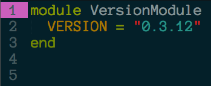
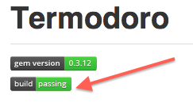

Gem Presentation Title
The Basics
- Bundler and Rake will be your friends for this, as always
- Directory structure / naming conventions
---> Global load path
- Smart gemspec file
- Changelog
The Basics
- Bundler and Rake will be your friends for this, as always
- Directory structure / naming conventions
---> Global load path
- Smart gemspec file
- Changelog
Global Load Path
- Your gem's lib directory will be added to the load path
- If you had a file named erb.rb there, any future require 'erb' would require this version.
Gemspec file
- Going to do a lot of work
- Will be updated often
- Keep it smart

Changelog
Important and fun. Like reading an old diary from when you were a dumbass kid. Learn from your past.
- Brings us to version tracking...
Changelog
Important and fun. Like reading an old diary from when you were a dumbass kid. Learn from your past.
- Brings us to version tracking...

In Practice...

Aside from making the .gemspec smarter, this bakes the concept of your gem's version right into the code.
You want the version to be an aspect of the software, not the distribution platform
Travis - Continuous Integration
 <-- You ever look at that and wonder what it means?
Project is built in a number of different contexts at every commit.
If something (or someone) breaks the software you'll know immediately
TESTING!
- Always important. More so in this context.
- New reasons to test...
1. Allows potential users to verify that your code is not borked.
2. Facilitates easy contribution (we'll come back to this soon).
3. Easily get a sense of the API ("it should make you a pizza. it should ask what toppings you want.") thanks to RSpec's nice readable format. (we'll come back to this even sooner)
Added bonus: Use Simplecov!
Seeing 100% coverage on passing tests and knowing you're shipping a reliable gem is just a nice feeling...
Use a spacebar or arrow keys to navigate